Introducción
En la presente actividad se implementó una VPN IPSec sitio a sitio entre dos routers Cisco, simulando la interconexión segura de dos redes privadas a través de Internet. La configuración incluyó el establecimiento de políticas ISAKMP (Phase 1), la definición del transform-set (Phase 2), la creación de listas de acceso para identificar el tráfico interesante y la aplicación del mapa criptográfico en la interfaz pública.
El objetivo principal fue garantizar la confidencialidad, integridad y autenticación del tráfico entre las redes 192.168.1.0/24 y 192.168.3.0/24, asegurando que únicamente el tráfico autorizado viajara cifrado a través del túnel VPN.
Topología
En esta práctica se llevó a cabo la implementación de una VPN Site-to-Site utilizando el protocolo IPSec para asegurar la comunicación a través de una red pública (ISP). La topología de red utilizada consta de los siguientes dispositivos:
- Tres routers 1941 (ISP, R1, R2)
- Dos switches 2960
- Dos clientes (PC´s)
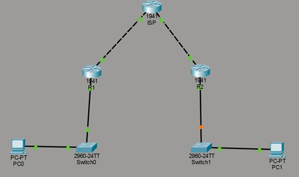
1. Configuracion Inicial
Se asignan direcciones IP a cada router y se activan las interfaces. También se agrega una ruta para que R1 y R2 puedan salir hacia el ISP y comunicarse entre sí por internet.
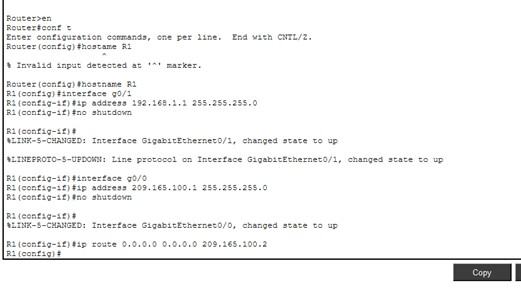
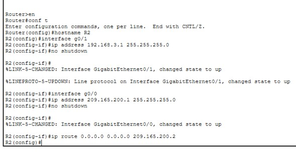
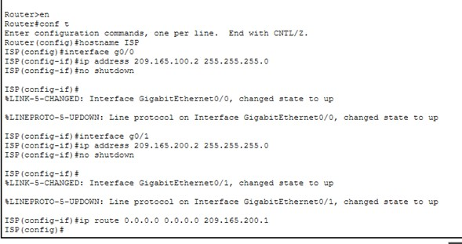
2. Licencia de seguridad habilitada
Se habilita el paquete de seguridad del router. Sin esta licencia, el router no permite usar funciones VPN/IPsec.
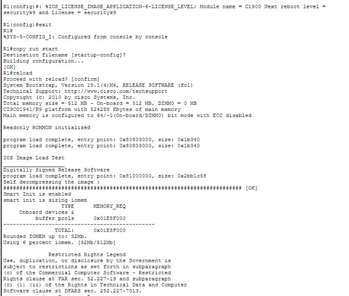
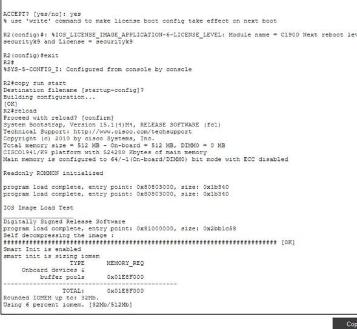
3. Implementacion de ACLs
Se crea una lista de acceso que define qué tráfico se va a cifrar. Solo el tráfico entre la red 192.168.1.0 y 192.168.3.0 viajará por el túnel VPN.
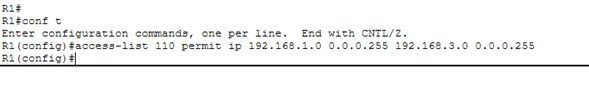
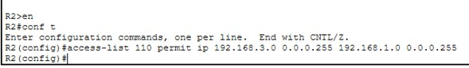
4. Phase 01: ISAKMP policy
Aquí se establece la conexión segura inicial entre routers. Se definen método de cifrado, autenticación y la clave compartida (pre-shared key).
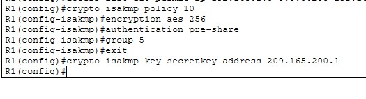
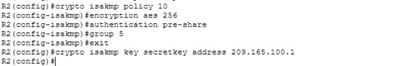
5. Phase 02: IPSec transform set.
Se especifica cómo se cifrarán los datos dentro del túnel: tipo de cifrado (AES) y método de integridad (SHA).
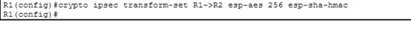
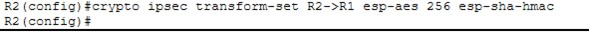
6. Crear el mapa criptográfico
Se agrupan la política ISAKMP, el transform set y la lista de control de acceso en un mapa criptográfico para posteriormente aplicarlo al túnel.
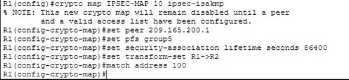
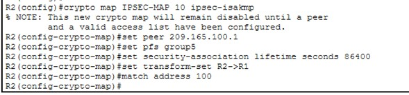
7. Aplicar el mapa criptográfico
El mapa se coloca en la interfaz que da a internet.
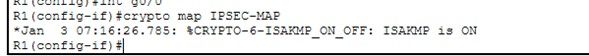
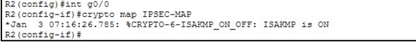
Reflexión técnica
La implementación de una VPN IPSec Site-to-Site demuestra la complejidad y robustez necesaria para proteger la información en tránsito sobre redes no confiables como Internet. El proceso de configuración en dos fases asegura tanto la negociación de los parámetros de seguridad (ISAKMP) como el cifrado y autenticación de los datos (IPSec).
A través de esta práctica, se comprueba cómo la combinación de criptografía simétrica (AES), funciones hash (SHA) y listas de control de acceso (ACLs) trabajan en conjunto para garantizar la confidencialidad, integridad y disponibilidad de las comunicaciones.